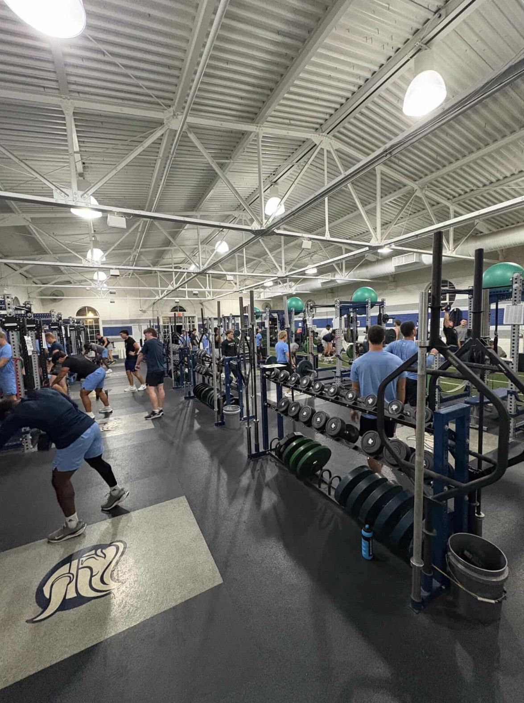
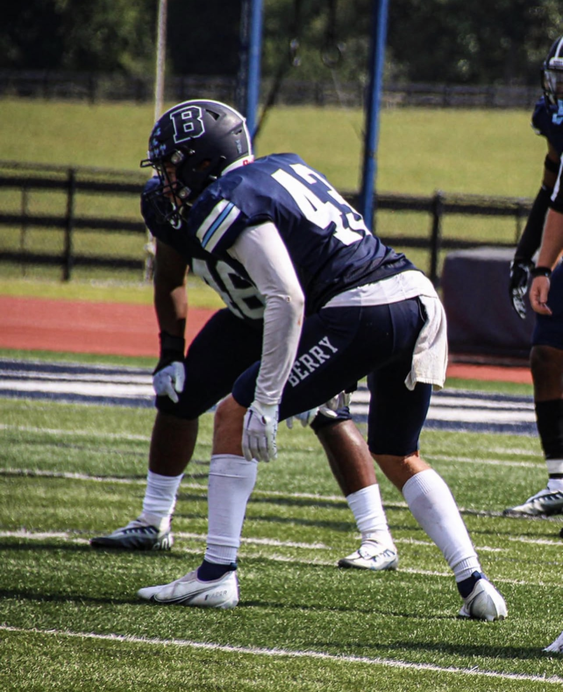
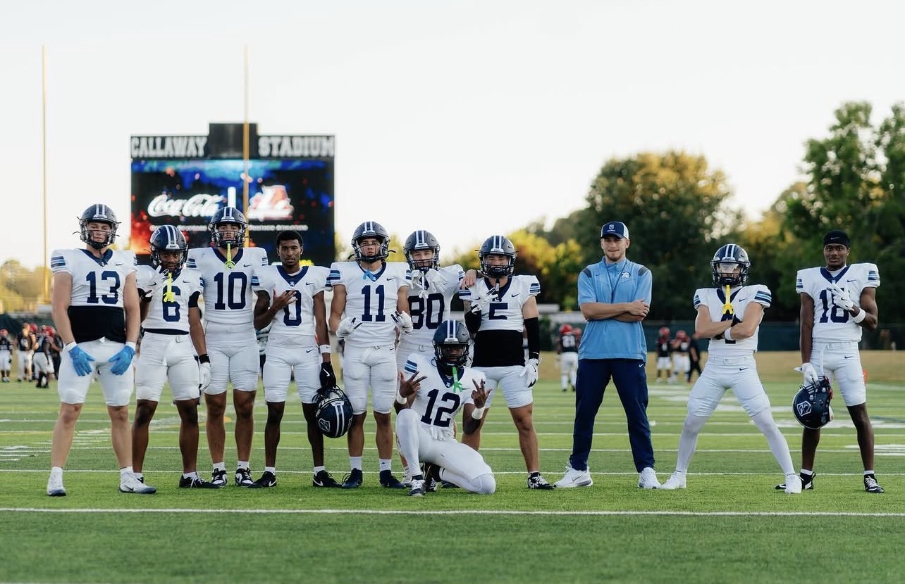
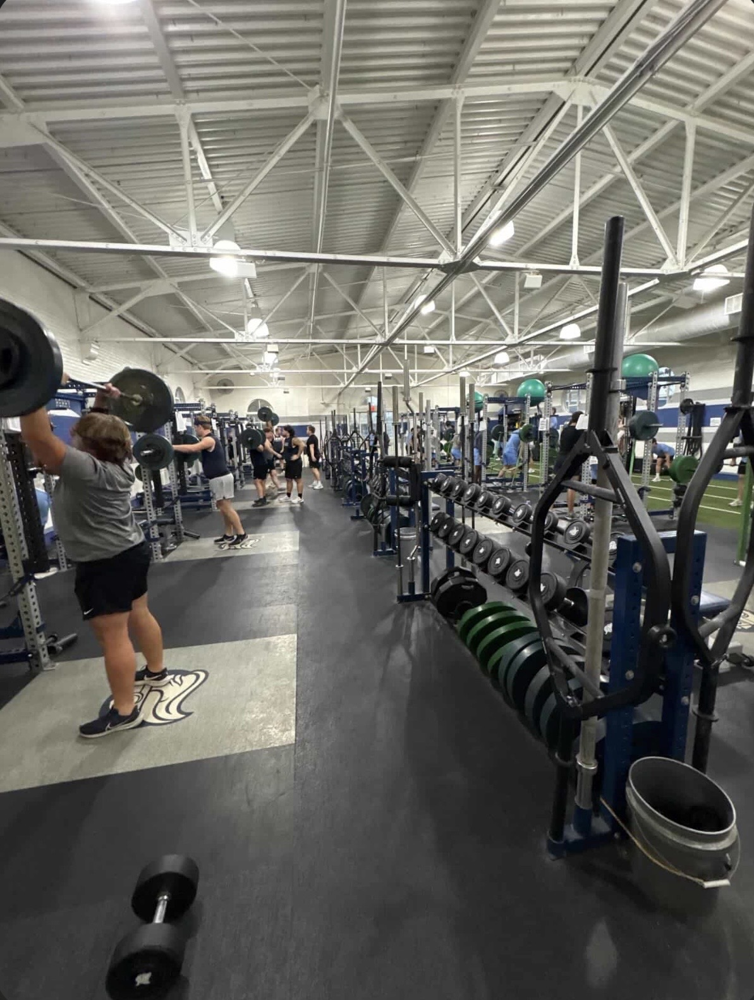
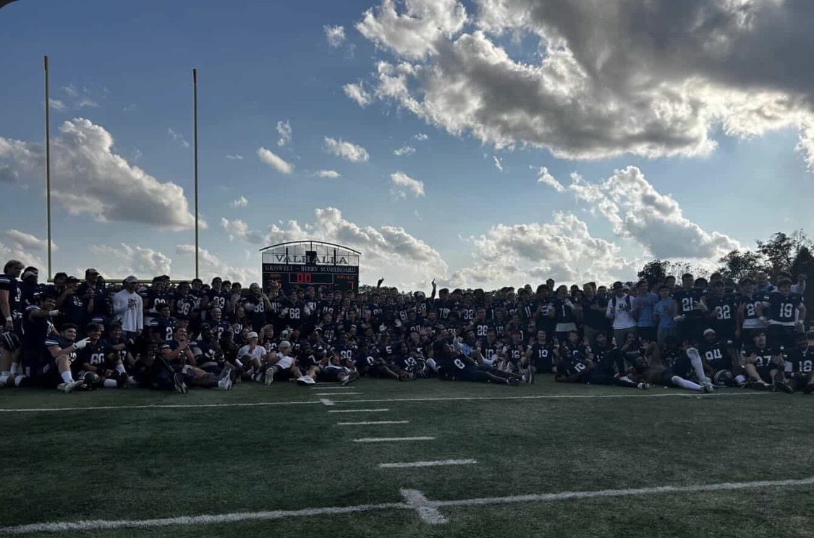

At 6 AM, most college students are still counting sheep and snoring, while Brock Skinner is counting reps and yelling. The weight room at Berry College is loud, raw, and alive before the rest of campus has opened its eyes. A barbell crashes to the floor. A player just hit a new personal record, and Brock, former linebacker, Graduate Assistant, and soon-to-be strength coach, wouldn't have it any other way.
Skinner arrived at Berry College in 2019 as the only freshman linebacker. He made a name for himself and accumulated many accolades. But between a COVID year, a vaccine that left him foggy for months, and a broken toe that cost him most of his senior season, he didn't get a true full season of the game he loved. So, when presented with the opportunity of a fifth year, he gladly took it. And that turned out to be just the beginning.
"I don't remember this, but my mother would tell me the only way to keep me preoccupied as a kid and out of her hair was to give me a ball of some sort," Skinner said when recalling where his journey with sports began. He tried everything from basketball and baseball to lacrosse. But football was different. Skinner begged his parents to let him play tackle football as a kid and was made to wait, playing flag until they finally gave in. "Without a doubt," he said, "it was the favorite sport that stuck."
He took that love and talent to Mill Creek High School, a powerhouse 7A program in Georgia, where he grew as a player and set his sights higher. By his senior year, he started looking at Division II, Division III, and NAIA schools in the Southeast. His mother was a part of the 1976 Berry College women's basketball team that won a National Championship when it was still an NAIA school. This put Berry on the map for Skinner. He took one visit, fell in love, and committed a couple of weeks later.
In 2019, Skinner, terrified, came in as the only freshman linebacker. He was a lighthearted, goofy kid just trying to figure out how to play the position. During one early practice, the team was running a drill where a tackler and a ball carrier were thrown out there to just go be football players. Skinner was hiding in the back, like any other scared freshman would do, when AM Harris, an established upperclassman linebacker with a buzzcut and a scar running all the way down his head, started tearing through a sea of players to get to Brock. He got right in Skinner's face, grabbed him, threw him in the drill, and watched him get leveled. "That was my 'welcome to college football' moment," Skinner laughed.

Skinner made a name for himself at Berry. As a freshman, buried behind three seniors and two juniors on the depth chart, he bought into special teams and ran with it. By his sophomore year, he earned Special Teams Player of the Year and worked his way into the starting linebacker rotation. He was becoming exactly the player he came to Berry to be. "If you had to define a Berry football player, it would be Brock Skinner for sure," said Will Johnson, a senior linebacker who played alongside Skinner. "I've never seen intensity like that, to be honest with you, until I got here."
That intensity showed up everywhere, not just on the field. During one practice when Skinner was sidelined with an injury, he showed up in his jersey and helmet the day after dislocating his shoulder, trying to get back out there. The trainer had to tell him no. "Him not being on the field is no different than him being on the field," Johnson said. "The intensity is still there." Skinner was eventually named a two-time team captain. "He was the leader of our team for every year I was a part of it," Johnson said. "Guys looked up to him and he was someone we were inspired to be."
But the road to that captaincy wasn't without its obstacles.
Skinner's junior year brought a challenge he didn't see coming. Berry College, like many schools at the time, was requiring COVID vaccinations. Skinner resisted as long as he could. When the school told him unvaccinated players would have to pay out of pocket for three tests a week, he relented. Shortly after, something felt off. "I just had this head fog," he said. "I had no clarity. It was the weirdest feeling." This lasted six months. That same year, he spent Christmas in the hospital with mono.
He pushed through it. Then came his senior year. Second week of the season, he obliterated his foot. He tried to play through it for two more games before he couldn't anymore. "I got to a point where I couldn't plant or cut," he said. "I was hurting the team."
But Skinner wasn't done. When the opportunity for a fifth year presented itself, the answer was simple. "You have yet to play a full season — literally, in four years," he told himself. "Let's go do it." So he stayed and finally got his season. And that turned out to be just the beginning.
The fifth year came and went. Skinner finally got the full season he deserved. But as his playing days wound down, one question arrived, the same one everyone faces at some point. What now? For a conference champ and Defensive Player of the Year, the ending of that chapter was never going to be easy. But a new one was able to begin when Skinner was presented with the opportunity to become a Graduate Assistant at Berry. So he took the chance to stay with the program and pursue higher education.
But the transition wasn't exactly smooth.
That first summer, Berry held its annual freshman mini camp: a three-day crash course for incoming players. Skinner was assigned to coach the wide receivers. He had spent his entire college career on the other side of the ball. Now he was in front of a group of wide receivers with the offensive playbook printed off, flipping through pages, trying to figure out what was going on. "It was a horrible look," he admitted. He spent that summer pouring into the offense, learning his receivers' assignments before worrying about anything else. Things started to click. But something else was happening too. As a coach, he learned that "you wear more hats," and the weight room, familiar as it was, turned out to be where he found something he didn't know he was looking for.

At first, the weight room was just another responsibility and part of the routine. But the more time Skinner spent there, the more something started to stir. He started learning the science behind it, understanding how training directly translates to performance on the field. He did an internship at Georgia Tech to see what strength and conditioning looked like at the FBS level.
"When I first got here helping out in the weight room, I didn't know that's what I wanted to do. Now, two years later, I'm leading the strength program here and that's what I'll be doing come fall if I choose to stay."
His passion and work ethic are evident. Skinner started documenting his players hitting new personal records, building a collection of moments to celebrate. "I really do believe that the weight room is the foundation for any team," he said. "The competitive energy, the standard, the culture — it's started and solidified in the weight room."
His players and former teammates noticed too. "Everything he does in football kind of really just transformed him into who he is in the weight room," Johnson said. "It was a natural path." Johnson described Skinner's approach as different from anything he had seen before, less about the coach and more about the players. "It's not really about how he does it or how it benefits him," Johnson said. "It's how it benefits us on the field."
"I want to scream and yell at 6 AM for the rest of my life," laughed Skinner.


Skinner is not the only one who has found something worth staying for at Berry. Christopher Lewis, a senior linebacker and two-time conference champion, is about to walk the same path. This fall, he will transition from player to Graduate Assistant, stepping into a role Skinner is stepping out of.
The parallels are not lost on him. "Him being here before me and doing it at a high level has been cool to experience," Lewis said. "That journey showed me how it can look, and I will be using some of his experience as a starting point and create an experience of my own."
Like Skinner, Lewis knows the transition won't be without its challenges. "The hardest part of that transition is creating professional relationships with people who have already established friendships," he said. But also like Skinner, he isn't coming here just to coach football. "I am most looking forward to doing the same for future Vikings," Lewis said. "To impact lives for the better — not just to be a great coach and win games, but to be someone who creates better men as they finish the program."
It is exactly the kind of thing Skinner would say. And that, perhaps, is the point. The relationships Skinner built at Berry, the standard he set in the weight room, the way he carried himself from a terrified freshman to the guy yelling at the 6 AM lift. It didn't just shape him. It left something behind.
"He would seriously give everything he could to help other people," Johnson said. "The heart he has is really special."
"If Brock Skinner meets somebody, he's going to be a friend," Johnson said. "Everyone knows Brock around here."
Seven years is a long time to be somewhere. But for Brock Skinner, Berry College was never just a place he played football.
"I owe a lot to the program and the people here. That's a big reason why I stayed."